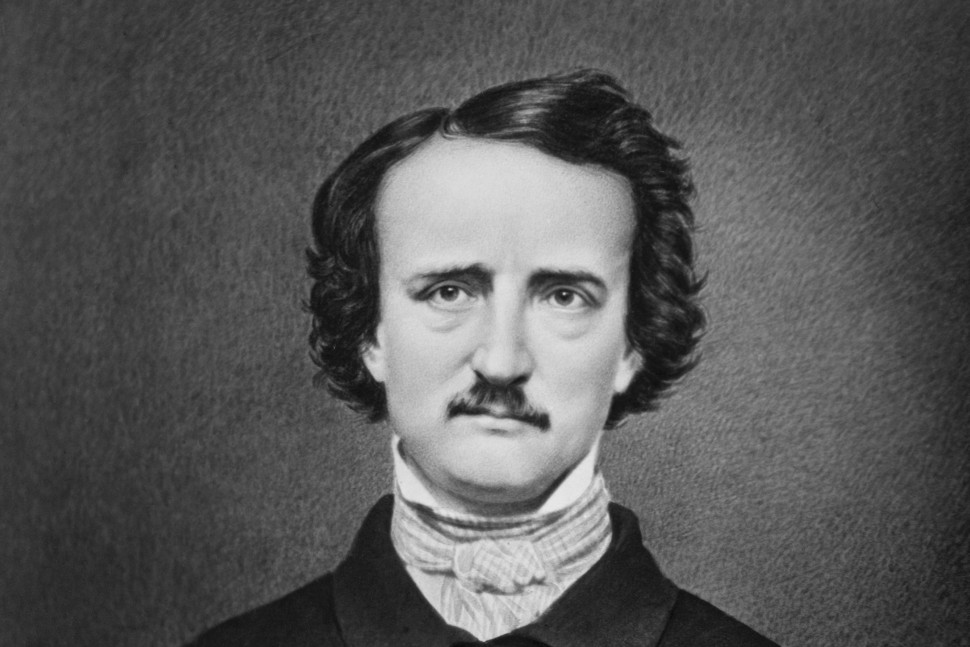

Edgar Allan Poe| Mary Shelley| Bram Stoker
 Edgar Allan Poe was an American writer, poet, editor, and literary critic born on January 19, 1809, in Boston. He is widely regarded as a central figure of Romanticism in the United States and of American literature.0 Poe's best-known works include the poems "To Helen" (1831), "The Raven" (1845), and "Annabel Lee" (1849), the short stories of wickedness and crime "The Tell-Tale Heart" (1843) and "The Cask of Amontillado" (1846), and the supernatural horror story "The Fall of the House of Usher" (1839)..2 Poe's mother, Elizabeth Arnold Poe, was a talented actress, while his father, David While there he distinguished himself academically but was forced to leave after less than a year because of bad debts and inadequate financial support from Allan. Poe’s relationship with Allan disintegrated upon his return to Richmond in 1827, and soon after Poe left for Boston, where he enlisted in the army and also published his first poetry collection, Tamerlane, and Other Poems. The volume went unnoticed by readers and reviewers, and a second collection, Al Aaraaf, Tamerlane, and Minor Poems, received only slightly more attention when it appeared in 1829. That same year Poe was honorably discharged from the army, having attained the rank of regimental sergeant major, and was then admitted to the United States Military Academy at West Point. Poe’s most conspicuous contribution to world literature derives from the analytical method he practiced both as a creative author and as a critic of the works of his contemporaries While Poe’s position includes the chief requisites of pure aestheticism,.ential condition of human existence Poe’s theory of literary creation is noted for two central points: first, a work must create a unity of effect on the reader to be considered successful; second, the production of this single effect should not be left to the hazards of accident or inspiration, but should to the minutest detail of style and subject be the result of rational deliberation on the part of the author. In poetry, this single effect must arouse the reader’s sense of beauty, an ideal that Poe closely associated with sadness, strangeness, and loss; in prose, the effect should be one revelatory of some truth, as in “tales of ratiocination” or works evoking “terror, or passion, or horror.”
Stories by Poe
We want to hear from you! if you havny comments or suggetions on things you would like to see on the site please let us know
© 2009 a classic horror authors website